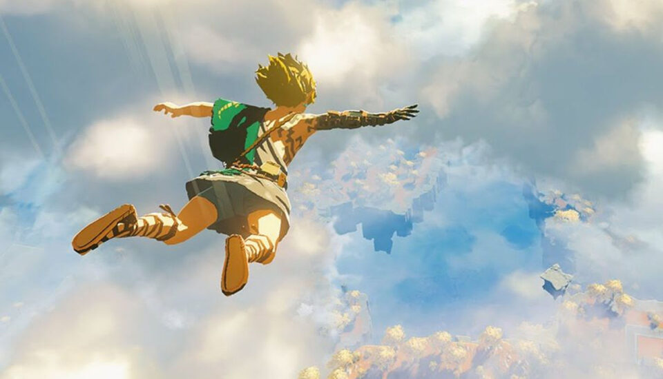

The Legend of Zelda: Breath of the Wild 2 é adiado para 2023 Ano que vem
Nintendo anunciou que The Legend of Zelda: Breath of the Wild 2 foi adiado para o outono brasileiro de 2023. Anteriormente, a empresa planejava lançar o game em algum momento de 2022.
Eiji Aonuma, produtor da franquia, disse no Twitter que foi necessário estender o tempo de desenvolvimento do jogo e a equipe continuará a trabalhar para torná-lo uma experiência especial.
Desenvolvedor cita, como exemplo, que o título terá exploração nos céus como novidade, mais variedade de recursos e elementos de gameplay inéditos.
“O produtor da série The Legend of Zelda, Eiji Aonuma, traz uma atualização sobre o período de lançamento da sequência de The Legend of Zelda: Breath of the Wild. Por favor, dê uma olhada”.
LEIA MAIS
1 - God of War Ragnarok Review;
2 – Elden Ring ganha como Jogo do Ano no The Game Awards;
The Legend of Zelda: Breath of the Wild 2. Foto: Reprodução/YouTube
The Legend of Zelda series producer, Eiji Aonuma, has an update to share about the launch timing of the sequel to The Legend of #Zelda: Breath of the Wild. Please take a look. pic.twitter.com/7OhayhiuM9
— Nintendo of America (@NintendoAmerica) March 29, 2022